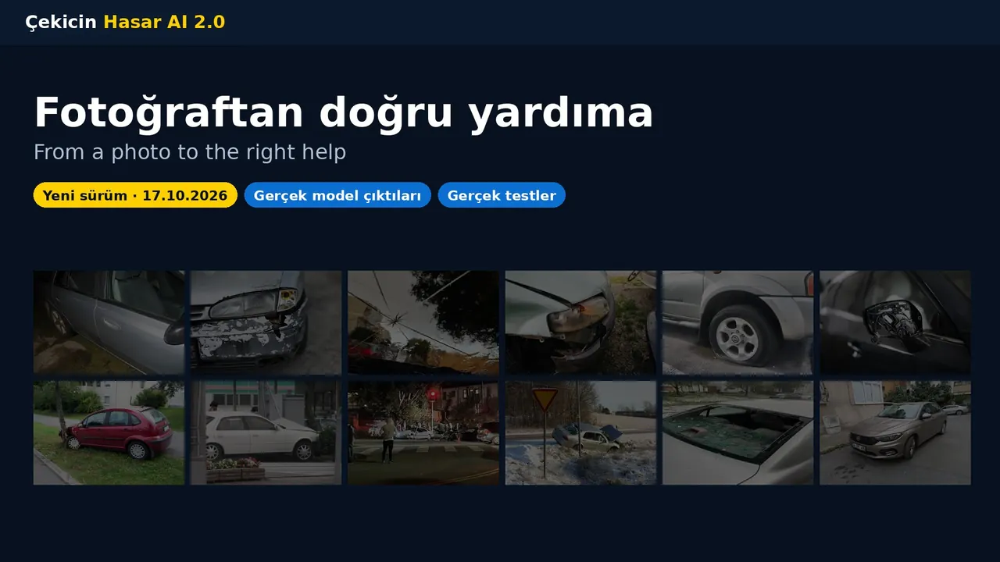

🔊 Bu videoda ses varThis video has sound
Türkçe anlatımTurkish narration · ekranda Türkçe + İngilizce altyazıTurkish + English captions on screen
1080p · H.264 + AAC · −14,5 LUFS
Slaytlar — her birini ayrı dinleyinSlides — listen to each one
Kaydırın veya oklara dokunun. “Bu slaytı dinle” videoyu o slayttan başlatır.Swipe or tap the arrows. “Listen to this slide” starts the video at that slide.

1 / 18
İndirDownload
Sesli sunum: her slaytın sesi PowerPoint'in içinde; slayt gösterisinde kendiliğinden çalar ve ilerler. Fotoğraflar slayta gömülüdür, kaybolmaz.Narrated deck: each slide's audio is inside the PowerPoint; in slide-show mode it plays and advances by itself. Photos are baked into the slides, so none can go missing.
⬇ Sesli sunum (PPTX)Narrated deck (PPTX)18 slayt · ses gömülü · 7,4 MBslides · audio embedded · 7.4 MB
⬇ Sunum, sessiz (PPTX)Deck, no audio (PPTX)e-posta için küçük · 3,2 MBsmall, for e-mail · 3.2 MB
⬇ Video (MP4)Video (MP4)5:06 · 1080p · 11,3 MB
⬇ Yalnız ses (MP3)Audio only (MP3)5:06 · 4,7 MB
⬇ Altyazı (SRT)Captions (SRT)TürkçeTurkish
Video açılmıyorsa sesi buradan dinleyinIf the video won't play, listen here
Ses gelmiyorsa: telefonun sessiz modunu kapatın ve medya sesini açın (yan tuşlar, video oynarken).No sound? Turn off silent mode and raise the media volume (side keys, while the video plays).